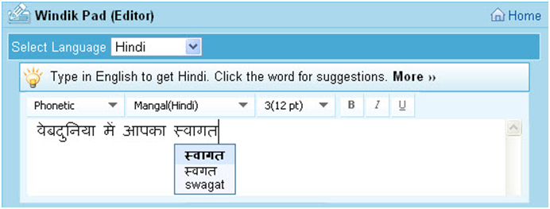

Language Input Tools
Webdunia’s language tools allow you to enter text in 22 Indian languages on any page on the web, without installing any software. It provides a visual keyboard to assist with editing words that do no transliterate properly.
Webdunia Input Output Component (WIOC)
WIOC Lite provides a highly intuitive input mechanism for the users. It supports natural way of typing in Indian languages. Unlike older days of transliteration, users do not have to learn and understand “The RULES”. WIOC can be embedded with applications developed in VB, VC++ and HTML.

For live demo of WIOC Lite please visit
Features
- Easily Pluggable Component for Web/Mobile/Desktop Applications
- Popular Keyboards - Phonetic Transliteration, Inscript, Remington & Typewriter
- Includes Predictive Help & Dictionary
- Browser Independency
- Easily Customizable
- Multilingual Support
- Intuitive User Interface
IMEs
Indic IMEs are Input utilities that are enabled at the system level, to get Unicode Indic Input working across various applications on a PC. Applications could be Word, Excel, Power Point, FrontPage, Internet Explorer etc.
They support 45 keyboard layouts across 12 languages of the sub-continent and are tailored to suit the stringent mapping requirements of users, who have found them most suitable replacements for grand old lingual typewriters.
Editor
Webdunia Editor is a free online Hindi typing tool that makes it easy to type in Hindi or any other Indian language. For example, type 'aap kaise hain'. Editor will convert it directly into Hindi script. Editor can also predict if multiple words are possible for your input. You can click on the word to select from those options.